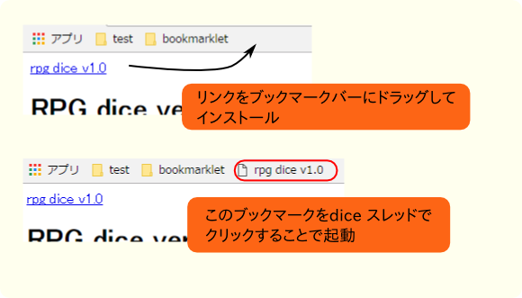
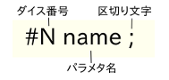
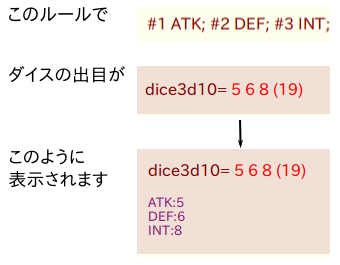
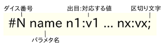
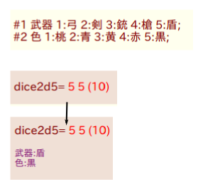
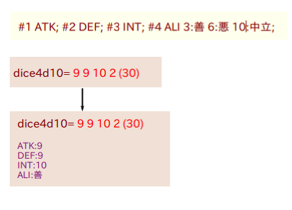

rpg dice v1.0
RPG dice ver1.0
RPG dice ver1.0 とは
RPG dice はふたば★ちゃんねるのdice機能支援のためのbookmarkletです。
スレッドを開始する際にルールを書いておくことで、ダイスの出目を見やすく整形します。
導入方法
ページ上部のrpg dice のリンクをブラウザのブックマークバーにドラッグ＆ドロップする事でブラウザにインストールします。
dice 機能を使ったふたばのスレッドでインストールしたbookmarkをクリックすることで使用します。

ルールの設定 (基本)
ルールは次のフォーマットで設定します。

例
#1 ATK; #2 DEF; #3 INT;

ルールの設定 (値の割り当て)
以下のように出目に特定の値を割り当てる事もできます。

例
#1 武器 1:弓 2:剣 3:銃 4:槍 5:盾;
#2 色 1:桃 2:青 3:黄 4:赤 5:黒;

ルールの設定 (応用)
値の割り当ては出目を超えない値が採用されます。
#1 3:x 10:y; ならばdice1 が1-3 の時はx, 4-10 の時はy が割り当てられることになります。
例
#1 ATK; #2 DEF; #3 INT; #4 ALI 3:善 6:悪 10:中立;

その他
rpg-dice のソースはここにあります。
お友達にも教えてあげて下さいね。